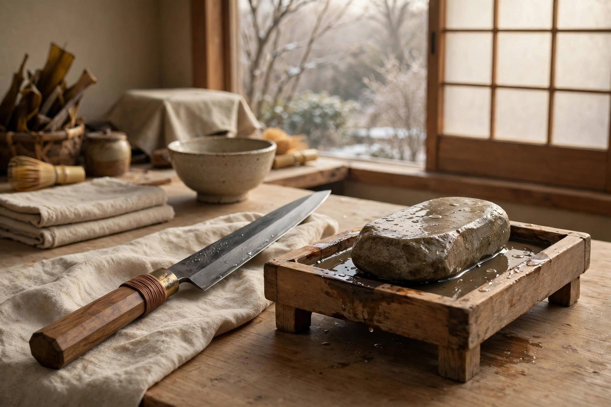

年末の包丁研ぎ直し ― 年越し・おせち準備の前に研ぐ理由と段取り

年越し・おせちの仕込みは、一年で包丁の出番が最も増える時期のひとつです。切れない包丁のまま臨むと、力任せになって食材を潰したり手を滑らせたりしがちです。仕込みの数日前までに、手持ちの包丁の状態を確認し、砥石の面直しまで含めて研ぎ直しを済ませておくのが、この記事の結論です。天然砥石は水に浸ける必要がなく、準備の手間も大きくありません。
なぜ年末に研ぐのか
年末年始の台所仕事は、普段と顔ぶれが違います。刺身を引く、飾り切りをする、根菜や凍った食材に刃を入れる――包丁には「滑らかに引く切れ味」と「真っ直ぐ入る安定感」の両方が求められます。切れ味の落ちた包丁では、力を込める分だけ食材の断面が潰れ、見た目にも味にも影響します。
もうひとつの理由は段取りです。仕込みの当日や前日に研ごうとすると、買い出しや他の下ごしらえと重なって落ち着いて研げません。研ぎは角度を一定に保つ作業で、急ぐほど雑になりがちです。数日前の余裕のある時間に済ませ、研いだ包丁で数回調理して感覚を確かめてから本番を迎えるのが理想です。
包丁の状態別・対応の目安
研ぎ直しといっても、包丁の状態によって必要な工程は変わります。手持ちの包丁を一本ずつ確認し、次の表を目安に対応を決めてください。
| 状態 | 見分け方 | 対応の目安 |
|---|---|---|
| 切れ味が落ちただけ | トマトや紙に刃が入りにくい、引っかかる | 中砥で刃を立て直し、仕上げ砥で整える。通常の研ぎ直しはこの範囲 |
| 刃こぼれがある | 刃先に小さな欠けが見える、光に当てると白く光る点がある | 荒砥〜中砥で欠けが消えるまで研いでから仕上げへ。工程が増えるので早めに着手を |
| 錆が出ている（鋼の包丁） | 刃や地肌に茶色い点・曇りがある | 錆を落としてから研ぎへ。深い錆は研ぎだけでは戻らない場合もある |
| 切れ味に問題なし | 試し切りが滑らか | 無理に研がない。仕上げ砥で軽く整える程度にとどめる |
なお、刃こぼれの修正のような荒研ぎの工程は、番手表示が安定した人造砥石が合理的です。仕上げだけ天然砥石を使う組み合わせについては、包丁研ぎに合う天然砥石の選び方で詳しく解説しています。
砥石側の準備チェック
包丁だけでなく、砥石側の準備も忘れずに。研ぐ当日に慌てないための確認項目です。
- 面が平らか：砥石の中央が凹んだままでは、角度が安定せず正確に研げません。凹みがあれば先に面直しを。手順は天然砥石のメンテナンス ― 面直しの方法と保管のコツを参照してください
- 水の扱いの違い：人造砥石は気泡が出なくなるまで水に浸けるのがメーカーの案内ですが、天然砥石はほとんど水を含まないため浸ける必要はなく、研ぐ面に水をかけながら使います（出典：貝印公式）
- 台の固定：専用の研ぎ台か濡れ布巾の上に置き、研いでいる最中に石が動かないようにします
- 乾燥状態の確認：保管中にひびが入っていないか、欠けていないかを目視で確認します
基本手順の流れ
詳しい手の動かし方はメーカーの公式解説に譲り、ここでは全体の流れだけを整理します。
- 1. 準備：砥石を固定し、水を用意します。人造砥石を使う工程では、先に水へ浸けておきます
- 2. 角度を決める：砥石と刃の角度は15度前後がひとつの目安とされ、最も大切なのは研いでいる間その角度を変えないことです。包丁は砥石の縦方向に対して約45度に置きます
- 3. 分けて研ぐ：切っ先、刃中、あごの近く、と部分ごとに添える指の位置をずらしながら、刃全体をまんべんなく研ぎます。出てくる研ぎ汁は捨てず、乾いてきたら水を足します
- 4. バリの確認：刃先全体にバリ（刃返り）が出たら、反対面も同様に研ぎます
- 5. バリ取りと試し切り：新聞紙を広げて両面をこすりバリを落とし、試し切りで滑らかさを確認します
手順の出典：貝印「包丁の研ぎ方」（公式）ほか。下記の参考リンクから一次情報を確認できます。天然砥石での仕上げは、研ぎ汁（砥泥）を活かして刃を当て、力を入れすぎないことが基本です。
研いだ後のひと手間
研ぎ終えた包丁は、水気をよく拭き取ってからしまいます。鋼の包丁は水分が残ると錆のもとになります。砥石も、研ぎ汁を洗い流し、直射日光を避けて陰干ししてから保管します。冬場は特に、濡れたまま気温の低い場所に置くと凍結の心配があるため、乾かしてからしまうひと手間が大切です。保管の詳しい考え方は、面直しの記事（天然砥石のメンテナンス）にまとめています。
参考リンク（一次情報）
- 貝印「包丁の研ぎ方」（公式）：https://www.kai-group.com/products/special/hocho/maintenance/polish/single_bevel/
- 貝印 よくあるご質問「砥石はどんな手順で使いますか？」（公式）：https://www.kai-group.com/faq_corporate/
仕上げに使う天然砥石を探す
- 砥石データベース ― 硬度Lvやサイズで絞り込んで探せます
- 鑑定済み砥石のご案内（事業紹介） ― 実際に包丁で研いでテストした石だけを取り扱います
- お問い合わせ ― 研ぎたい包丁の種類を添えてご相談ください
よくある質問
- 年末の包丁研ぎ直しは、いつ頃やるのがよいですか？
- 年越し・おせちの仕込みが始まる前、買い出しのついでにバタバタしない時期がおすすめです。研いだ直後は切れ味を確認しながら数回使うと感覚がつかめるため、仕込みの数日前までに済ませておくと安心です。
- 天然砥石は使う前に水に浸ける必要がありますか？
- 貝印の公式案内では、天然砥石はほとんど水を含まないため、使用前に水に漬ける必要はないとされています。水に浸ける手順は人造砥石向けのものです。天然砥石は研ぐ面に水をかけながら使います。
- 研ぎに慣れていない場合、年末までに何をすればよいですか？
- まず砥石の面が平らかどうかを確認し、凹んでいれば面直しを先に行ってください。いきなり本番の包丁で試すのではなく、普段使いの一本で角度を一定に保つ練習をしてから、大事な包丁に取りかかるのが無難です。
- 研ぎ上がりの切れ味はどう確認しますか？
- 刃全体にバリ（刃返り）が出たことを指先の感覚で確認し、新聞紙などでバリを落としたうえで、食材や紙で試し切りをします。スムーズに切れれば完了、引っかかりが残る部分があれば、その部分にバリが残っているサインとされています。